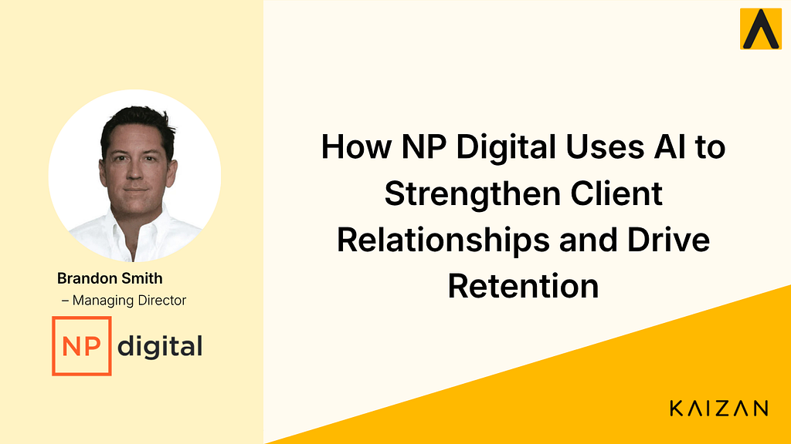

How NP Digital Uses AI to Strengthen Client Relationships and Drive Retention

Brandon Smith, Managing Director at NP Digital, shares how AI is helping client teams gain visibility across relationships, save time, and protect revenue.
Watch the full conversation
Prefer to hear it in Brandon's own words? Watch the full interview on YouTube.
NP Digital is a global performance marketing agency helping brands grow through data-driven digital strategies across SEO, paid media, and content marketing.
With teams operating across multiple markets and managing a wide portfolio of clients, maintaining visibility across every client relationship is critical. But as the business scaled, so did the complexity of client communication.
Emails, meetings, Slack messages, and internal discussions all contain important signals about the health of client relationships. However, when those insights are spread across multiple platforms and team members, it becomes difficult to get a clear picture of how each client relationship is performing.
In this case study, Brandon Smith explains how implementing Kaizan AI has helped the agency gain visibility across client relationships, reduce manual work for account teams, and strengthen client retention.
Key Results
Using Kaizan, NP Digital’s client teams are now able to:
- Save up to 8 hours per month — Manual administrative work for account managers is significantly reduced.
- Gain full visibility across client relationships — Communication across emails, meetings, and messaging platforms is analysed in one place.
- Identify risk and revenue opportunities earlier — AI highlights potential issues and expansion opportunities before they become obvious.
The Challenge: Fragmented Client Communication
As NP Digital expanded, communication with clients began to spread across a growing number of platforms including Teams, Google Workspace, Outlook, and Slack.
Each of these platforms held important pieces of information about client relationships, but none of them provided a complete picture.
At the same time, multiple team members were often involved in managing the same client account.
Each person had their own perspective on the status of the relationship based on the conversations they were involved in.
The result was a lack of unified visibility.
“There are conversations taking place across so many platforms that we don’t really have visibility over the health of a client.”
Without a central view of client engagement, it became harder to track relationship health, identify potential risks, and spot opportunities to strengthen partnerships.
Why AI Is Critical for the Future of the Business
For NP Digital, AI is not just a tool for automation. It is becoming fundamental to how the agency operates.
Across the business, teams are encouraged to adopt AI to improve efficiency, automate workflows, and unlock insights from operational data.
“We see AI as critical to the future of our business, not just across client servicing, but across every facet of the business.”
By analysing communication data and engagement signals, AI enables the agency to move from purely relationship-driven client management toward a more data-driven approach.
This allows teams to make better decisions, respond to client needs earlier, and manage relationships more proactively.
The Solution: Unified Client Intelligence
By implementing Kaizan, NP Digital gained the ability to analyse communication data across multiple platforms and team members in one place.
Instead of relying on scattered notes or individual memory, Kaizan aggregates client communication data and surfaces insights automatically.
This provides client teams with:
A bird’s-eye view of every client relationship
Visibility across conversations happening across platforms
Historical context from past discussions
AI-driven signals highlighting risks and opportunities
“Using Kaizan has enabled us to analyse large data sets across different platforms and across multiple client servicing staff.”
With this unified visibility, teams can quickly revisit previous conversations and better understand the context behind client interactions.
Saving Time for Client Teams
One of the most immediate benefits for NP Digital has been the time saved for client service teams.
Previously, account managers spent significant time documenting conversations, reviewing historical discussions, and manually assessing the health of client accounts.
With Kaizan analysing communication data automatically, much of this manual work is eliminated.
On average, NP Digital’s client service managers are now saving several hours each week, with some saving up to eight hours per month.
“This gives time back to the teams to focus on strategy, and that’s the most important thing in a healthy client relationship.”
Instead of spending time on administrative tasks, teams can focus on building stronger relationships and delivering better strategic outcomes for clients.
Identifying Risk Before Clients Leave
Another major benefit has been the ability to identify potential client risk earlier.
By analysing conversation patterns and engagement signals across communication channels, Kaizan can highlight accounts that may require attention.
This allows teams to act before issues escalate.
“We’ve had numerous occasions where we’ve been able to spot and identify high-risk clients that potentially were going to leave.”
This early visibility gives teams the opportunity to address concerns, strengthen engagement, and maintain healthier client relationships.
Driving Revenue Through Client Retention
While operational efficiency is valuable, the most significant business impact for NP Digital has been improved client retention.
For agencies, retaining existing clients is one of the most important drivers of long-term revenue.
By identifying risks earlier and highlighting opportunities to strengthen relationships, Kaizan helps NP Digital protect and grow client partnerships.
“Client retention is one of the key areas. The ability to identify where we’ve got high-risk clients or an opportunity to get things back on track.”
Rather than reacting after problems appear, the team can now take proactive steps to keep relationships on track.
The Impact
Since implementing Kaizan, NP Digital’s client teams now have a clearer and more unified view of every client relationship.
Instead of relying on fragmented communication across multiple platforms, teams can analyse engagement data across the entire client lifecycle.
This enables them to:
save time previously spent on manual client management
identify client risk earlier
strengthen long-term client relationships
focus more time on strategy and growth
For agencies managing complex client relationships, having this level of visibility is becoming essential.